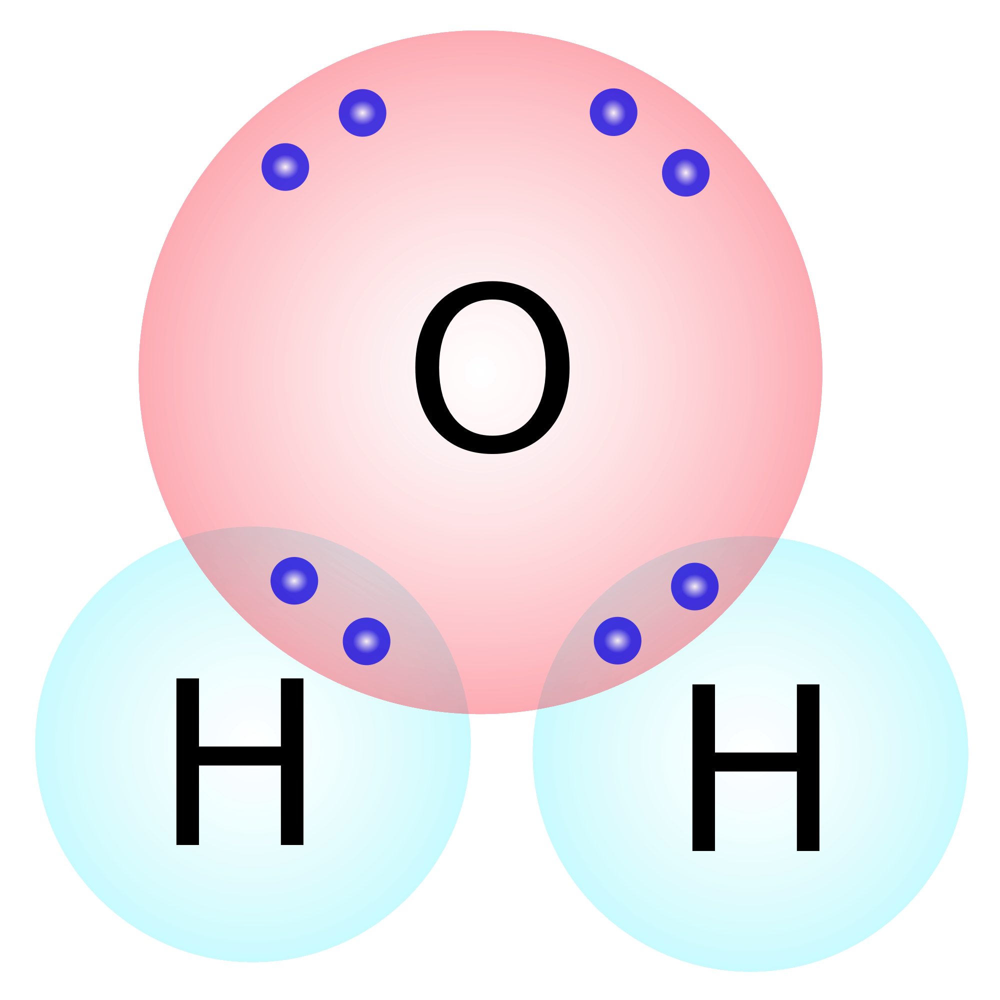
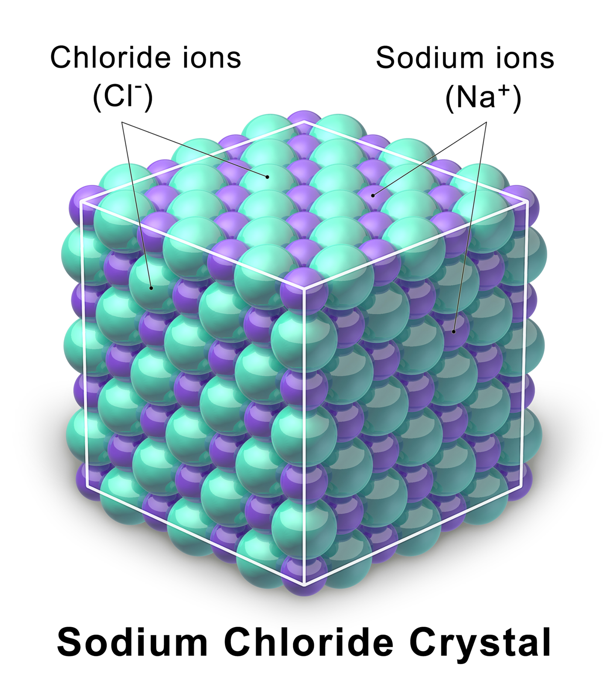
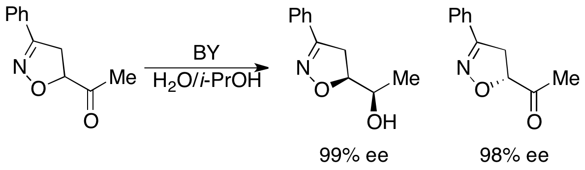
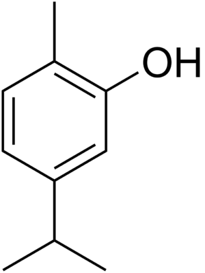

Chemistry of Ingredients
| Ingredient | Chemical Name | Picture |
|---|---|---|
| Flour: a main ingredient of pizza dough. Flour is comprised of erythrose, an isomer with an aldehyde group. | Erythrose: C4H8O4 |
Image used under public domain. |
| Water: also known as dihydrogen oxide, this polar covalent molecule is a universal solvent and a necessity for life. | Water: H2O |

Image used under public domain. |
| Salt: an ionic compound and metal halide that is used to season food. | Sodium Chloride: NaCl |

"Blausen 0660 NaCl.png by BruceBlaus is licensed under CC BY 3.0 |
| Yeast: used as a food additive that is integral to both the form and taste of pizza dough. | Yeast: C19H14O2 |

"Bakers yeast KR scheme.png by Jlipshultz is licensed under CC BY-SA 3.0 |
| Tomatoes: A main flavor component of the tomato is isoprene, an unsaturated penta hydrocarbon. | Isoprene: C5H8 |
Image used under public domain. |
| Cheese: A major acid found in cheese is butyric acid, which is a four-carbon fatty acid. Lighter forms of butyric acids contribute to the taste and smell of cheese. | Butyric Acid: CH3CH2CH2COOH |
Image used under public domain. |
| Garlic: a herb with a bulbous shape, it is comprised of various organosulfur compounds. Allicin is a major flavor component of garlic. | Allicin: C12H21NO4S3 |

Image used under public domain. |
| Oregano: a main flavor and chemical component of oregano is carvacrol. | Carvacrol: C6H3CH3(OH)(C3H7) |

Image used under public domain. |
| Olive Oil: an unsaturated fatty acid that is mainly composed of oelic acid, which is the most common fatty acid. | Oelic Acid: CH3(CH2)7CH=CH(CH2)7COOH |

Image used under public domain. |
{kind=link}
{kind=link}